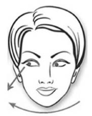
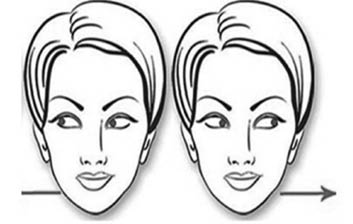
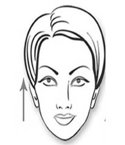
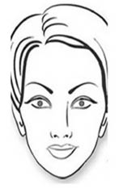

2. BÖLÜM
SÖZSÜZ DAVRANIŞLARIMIZIN KÖKENİ
Bundan on binlerce yıl önce, türümüz ağaçlarda yaşayan canlılardı.13 Diğer primatlardan (insansı maymunlardan) pek farkımız yoktu. Bulunduğumuz yerden çok fazla hareket etmez, elimizi uzatır ve en yakınımızdaki meyveyi kopartarak yerdik. Ağaçlar arasında, sık ormanlarda güvendeydik. Sonra bizi insan yapan unsur ağır bastı. Aramızdan cesur birileri ormanı terk ederek açık alanlarda yaşamaya başladı. Afrika’nın bozkırlarını aşmaya koyuldular. Keşif duygusu ağır basan bu türdeşlerimizi yalnız bırakmadık ve arkasına takıldık. Diğer primatlarla bu noktada ayrılmaya başladık. Ağaçlardan inmek ve açık alanlarda yaşamak zor ve tehlikelerle doluydu. Hayatta kalmak için bir araya geldik ve kabileler kurduk. Yeryüzünün en sosyal canlıları olduk. Doğum gerçeği kadınlarla avcı erkekleri birbirinden ayırdı ve farklı bir şekilde evrimleşmeye başladık. Kadın bedeni, doğum yapmak üzere özel bir vücut yapısına bürünürken; avcı erkek irileşti, kolları uzadı, ensesi kalınlaştı ve bedeni farklılaştı. Kabileler kalabalıklaştıkça iletişim ihtiyaçları da arttı ve bambaşka bir dil ortaya çıktı. Bu dil sayesinde, insanlar konuşmadan anlaşmaya başladı. Sözsüz dil öylesine etkili oldu ki genlerimize ve kültürümüze silinmeyecek bir biçimde kazındı. Böylece bin yıllarca taşındı ve hâlâ kullandığımız sözsüz dilin kökenlerini oluşturdu.
Akıllı Hans Vakası
Sözsüz iletişim kavramını açıklamak için ilginç bir olay anlatılmaktadır.14 20. yüzyılın başlarında, matematik öğretmeni ve amatör at eğiticisi olan Wilhelm von Osten, Hans ismini verdiği bir at edinmişti. Hans’ın toplama, çıkarma, çarpma, bölme, kesirlerle çalışma, zamanı söyleme, takvim takip etme, değişik müzik tonlarını tanıma, Almanca okuma, heceleme ve anlama yeteneklerinin olduğu söyleniyordu. Hans sorulan sorulara toynağını yere vurarak cevap veriyordu. Örneğin von Osten ata iki kere ikinin kaç ettiğini sorduğunda dört kez toynağını yere vuruyordu. Soruların sözlü ya da yazılı olarak sorulması fark etmiyordu. Von Osten, Hans’ı Almanya’nın tamamında dolaştırdı ve ücretsiz gösteriler yaptırdı. Yetenekleri öyle çok ilgi çekti ki New York Times’a altı kez haber oldu.
Halkın ilgisi bu denli yoğun olunca, Alman Eğitim Konseyi von Osten’in bilimsel iddialarını araştırmak için bir komisyon kurdu. 13 kişiden oluşan ve “Hans Komisyonu” ismiyle bilinen bu heyette; bir veteriner, bir sirk yöneticisi, bir süvari subayı, birçok öğretmen ve Berlin Hayvanat Bahçesi’nin müdürü görev yapıyordu. Von Osten’in bulunmadığı bir ortamda yapılan testlerden de aynı sonuçlar çıkınca, komisyon iddiaların doğruluğuna karar verdi.
Ancak, oluşturulan ikinci bir komisyon, Hans efsanesinin sonunu getirdi. Komisyonda bulunan araştırmacı Pfungst, von Osten’den atın kulağına eğilerek bir soru sormasını, ancak, sorduktan sonra çekilmesini ve kendisini ata göstermemesini istedi. Von Osten, Hans’ın kulağına eğilip iki ile ikiyi toplamasını istedi, ancak, izleyiciler sorudan haberdar değildi. Hans cevabı bilemedi. Kurul ve van Osten şaşkındı. Deney birkaç kez tekrarlandı ama sonuç değişmedi. Araştırmalar sonunda Pfungst, izleyicilerin sorunun cevabını bildiği durumlarda, Hans’ın başarı oranı %89 iken cevabı bilmediği sorularda başarının yalnızca %6 olduğunu tespit etti ki, bu ancak şans faktörüyle açıklanabilirdi. Bunun üzerine Pfungst araştırmasını soruyu soranın davranışlarını incelemeye yönlendirdi; soruyu soranın duruşu ve yüz ifadesinin gerginlikle beraber değiştiğini ve atın son toynak vuruşunu yapmasıyla rahatladığını anladı. Yani soruyu soran ya da gözlemci farkında olmadan karşıya sözsüz işaretler göndermekteydi. Muhtemelen atların sosyal iletişimi, küçük duruş değişikliklerini izlemeye dayanıyordu ve bu Hans’ın, von Osten’in farkında olmadan verdiği sözsüz ipuçlarını kolayca yakalamasına sebep oluyordu. Hans’a bir soru sorulduğunda, cevabı bilen gözlemcilerde cevabı bekleyen bir duruş meydana geliyor, beden gerginlikleri yükseliyor ve başlarını hafifçe öne eğiyorlardı. Hans doğru sayıya geldiğinde gözlemciler rahatlıyor ve başlarını yavaşça yukarı kaldırıyorlardı, bu da Hans için vurmayı kesme işareti anlamına geliyordu. Hans başın milimetrenin beşte biri kadar küçük hareketlerini bile fark edebiliyordu. Devam eden araştırmalar Hans’ın vurma hareketini, izleyicinin kaş kaldırmasıyla, hatta burun deliklerinin hafifçe açılmasıyla bile durdurduğunu gösterdi.
İpucu: Akıllı Hans vakası, sözsüz iletişimin ne demek olduğunu anlatan en iyi örneklerden biridir. Bu bize insan etkileşiminde sözsüz iletişimin rolüne ilişkin bazı sonuçlar çıkarmaktadır:
1. Başka bir kişinin gözü önündeysek, tutumumuz, duygularımız ve davranışlarımıza ilişkin sürekli sinyaller veririz.
2. Diğerleri kısmen bu sinyalleri fark edebilir ve anlamını çözebilir.
3. Çözülen bu işaretlerden içimizde sakladığımız birtakım duygu ve düşüncelerimiz açığa çıkabilir.
Burada dikkat edilmesi gereken bir husus daha vardır. Atlar doğası gereği arazide çok hızlı koşması gereken ancak, karşısına çıkabilecek herhangi bir engel, yılan vb. şeyleri çok önceden fark etmesi gereken bir hayvandır. Benzer şekilde motosiklet kullananların da zamanla görme açısı genişlikleri, gözlem yeteneği gelişir ve olası tehlikeleri sezmeye başlarlar. Yayanın yola çıkmak için motosikletin geçmesini bekleyip beklemeyeceğini bile yüz ifadesinden çok kısa sürelerde anlarlar. Hans da bu doğuştan var olan yeteneklerini eğitim sayesinde üst düzeye çıkarmış olabilir.
Yukarıda anlatılan olay, bizlere sözsüz iletişim üzerine bir fikir verebilir. Sözsüz iletişim, kısmen kasıtlı; çoğunlukla istem dışı ortaya çıkan ve iletilen mesajlardır. Konuşurken, verdiğimiz mesajların büyük çoğunluğu kasıtlı olarak söylenir. En fazla ağzımızdan kaçar ki, bu dahi neticede bilerek ve isteyerek konuşulmuş, belki sonuçları yeterince hesaplanmamış olan sözdür. Oysa sözsüz hareketler ve mesajlar, bizim genetik yapımıza ve kültürel kodlarımıza işlenmiştir. Duygusal halimizle ve duyguları gösterme kurallarımızla bire bir ilişki halindedir. Bu da sözsüz mesajların kendiliğinden ortaya çıkmasını açıklamaktadır.
Sözsüz davranışları incelemeden önce, bu davranışların kökenine, bir başka deyişle zihinsel altyapıya eğilmek gerekir. Beyin, tüm davranışlarımızı yönlendiren organımız olduğuna göre, sözsüz hareketlerin kaynağı da orada aranmalıdır.
İnsan Beyni ve Limbik Sistem
İnsan beyni tek parçalı bir organ değildir. Üç bölümden oluşur: Beyin sapı (sürüngen beyni), limbik sistem (memeli beyni) ve neokorteks (İnsan beyni).1516 Beyin sapı reflekse dayalı motor hareketler ile hayati fonksiyonları yerine getirirken limbik ön beyin açlık ve susuzluğu gözleyerek giderilmesini sağlar ve zevk, öfke, korku, mutluluk gibi duyguların yaşanması ve ifadesinden, sosyal-duygusal iletişim isteğinden sorumludur. Beynin üçüncü kısmı olan “neokorteks” ise düşünen beyindir ve bizi diğer hayvanlardan ayırır. İnsan türüne özgü bir düzeyde hesaplama, analiz etme, yorumlama ve sezme yetilerinin yanında karmaşık düşünce sistemi sayesinde neokorteks (limbik sistemin aksine), beynimizin en az güvenilir olan kısmıdır.
Beyin sapı doğuma kadar olan sürede, yani anne karnında olgunlaşır ve doğum esnasında tamamen işlevseldir. Bilgisayar diliyle konuşursak, beyin sapı başlangıçtaki donanımımızdır (hard ware). Limbik sistem ise doğduğumuzda şekil verilebilir bir haldedir; tecrübeye dayalıdır ve daha yavaş olgunlaşarak gelişir.17 Beyin sapının sabitliğinin yanında limbik sistemin işlenebilirliği, doğumu izleyen ilk aylarda ve yıllarda, yeterli miktarda sosyal, duygusal, algısal ve bilişsel olarak uyarılmaya ihtiyaç duyar. Eğer yeterli uyarılma sağlanmazsa, ya da anormal veya ihmal edilen bir çevrede yetişirse, gelişmekte olan nöronlar ve dentritler (beynin hücreleri ve bağlantıları), sapkın ve anormal bağlantılar kurarak ölürler ya da düşük hızda çoğalırlar. Bunun sonuçları son derece vahimdir. Bu tür gelişim bozuklukları en başta bebek ölümleriyle sonuçlanır. 1900’lerin başlarında, yetimhanelerde yetişen çocuklar üzerine yapılan araştırmalarda, duygusal temasın eksikliğinden dolayı meydana gelen 1 yaşın altındaki bebek ölümlerinin oranının %70’in üzerinde olduğu belirtilmiştir. Dublin Yetimhanesi’ne 25 yıllık bir süre içerisinde kabul edilen 10.272 çocuktan yalnızca %45’i hayatta kalmıştır.1819 Ölmeden hayatta kalmayı başarabilen çocukları ise ilerleyen hayatta başka bir acı gerçek beklemektedir. Bakımın ve dokunma dürtüsünün en alt düzeyde olduğu bu yerlerden ölmeden kurtulan bireyler, ilerleyen yıllarda zekâ geriliği, uç noktalarda pasiflik, umursamazlık, yüksek miktarda dikkat eksikliği, patolojik utangaçlık ve fazlasıyla tuhaf sosyal davranışlar sergilemektedirler.20
Kitabın ilerleyen safhalarında, limbik sistem kavramıyla sıkça karşılaşacağız. Çünkü limbik sistem, tüm duygusal davranışlarımızın kaynağıdır ve duyguların sözsüz davranışlar üzerinde oldukça büyük bir etkisi vardır.
Donma-Kaçma-Savaşma Güdüsü
Örnek Olay: Çalıştığım işyerinde, doğrudan bağlısı olmadığım, ama hepimizin ara sıra imzaya çıkmak zorunda olduğumuz üst düzey bir yönetici vardı. Bu kişi, kabalığıyla, kırıcılığıyla ve ağzı bozukluğuyla nam salmış bir kişiydi. Bir işyerinde ya çok iyi ya da çok kötü yöneticilerin sözü edilir. Çoğunlukla da kötülerin. Bu kişi de böylesi anlatılan ve herkesin hakkında önyargı sahibi olduğu bir adamdı.
Nöbetçi olduğum bir sabah, erkenden bu yöneticinin odasına gidip bir raporu arz etmek zorunda kaldım. Sanırım odasına ikinci gidişimdi ve son derece gergindim. Her an azarlayabileceği ve moralimi bozabileceği kaygısıyla kapısını çalarak odasına girdim, kendimi tanıtarak raporu uzattım. Ayakta bekleyeceğimi düşünürken, beklenmedik bir şekilde, “Otur evladım...” dedi. Şaşkınlıkla koltuğun ucuna iliştim, kendisi de raporu okumaya başladı.
Bir süre geçtikten sonra kendimi fark ettim ve incelemeye başladım. Ellerim dizlerimin üzerindeydi ve hareketsizdi. Ellerim bir yana, tüm vücudum hareketsizdi. Kafamı oynatmıyordum ve sağa sola bakmıyordum. Vücudum kendiliğinden kasılmış gibiydi. Başımı ve gövdemi hafifçe öne eğmiş ve hedef küçültmüştüm. Kıpırdarsam, adamın beni fark edeceği ve kızacağı endişesi bilinçaltımı etkilemişti. Sonuç itibariyle, tam anlamıyla donmuştum. Hareketsiz kalarak dikkat çekmeyeceğim konusunda limbik sistemim kendi kendisine tedbirler almıştı.
Ben, sözsüz iletişim çalışmanın en keyifli yanının kendi içine bakmak, kendi hareket ve davranışlarını tanıyarak adlandırmak olduğunu düşünüyorum. Yoksa karşındakini etkilemek üzere tuhaf ve yapmacık hareketler içerisine girmek, el sıkarken şöyle durmak, omzundan böyle tutmak filan işin hikâye kısımları. Kaldı ki yapmacık hareketler her zaman için sırıtır ve kolaylıkla fark edilir. Ama kendini tanımak, her durumda kişisel iletişim becerilerini geliştirir.
Amigdalanın, limbik sistemin bu büyük çekirdeğinin çok önemli bir rolü vardır. Duygular; bilinçaltındaki anılar ve limbik sistemin çalışmasıyla şekillenir. Amigdala, bilinçsiz duygusal durumlar ve tecrübeler üreterek onları geliştirir. Esas işi çevreden gelen korkutucu ya da psikolojik olarak zarar verici verileri tanımlayarak size “don, kaç ya da savaş” mesajını vermektir.21 Bu sistem kalbinizi, damarlarınızı ve tükürük bezlerinizi harekete geçirir ve bu sizin kontrolünüz altında değildir. Acil bir durumda, beden sizin bu durumla baş edebilmek için, kısa bir süre içerisinde kaslarınıza ve dikkatinizin her bir damlasına ihtiyaç duyacağınızı hesap eder, buna uygun ani tedbirleri alır.22Bu tepkiler, bizim milyonlarca yıllık evrimimizden getirdiğimiz özelliklerdir. İlk insanların hayatta kalması, limbik sistemin geliştirdiği stratejiler sayesinde mümkün olmuştur. Bu strateji, ölümcül bir durumda vücudun donma tepkisini devreye sokmasıdır. Hayvanların birçoğunun harekete tepki verdiği dikkate alındığında bu tepki hiç de anlamsız değildir.23Aynı durumda benim vücudumun da donma refleksi göstermesi sebepsiz değildir. Hareket sosyal etkileşimde karşıdakinin dikkatini çeker ve içerisinde bulunduğum durumda tepki alabilir. Kendi kızımı gözlemlediğimde; ona ne zaman bir hatasından dolayı kızarsam ve o da bu hatayı gerçekten işlediğinin farkındaysa; ya da bir yalanını yakalarsam ciddi bir donma hareketi gösterdiğini ve kesinlikle konuşma sona erene kadar kıpırdamadığını görüyorum. Aynı hareketi sorgulamalarda da zaman zaman görebilmekteyiz. Elbette suç dünyasında yıllarını geçirmiş ve artık profesyonel olmuş kişilerde her zaman için geçerli değildir, ama profesyonel suçlu olmayan; ilk kez suç işlemiş kişilerde de, suçlarının anlaşıldığını anladıklarında donma eylemi ve benzeri istemsiz tepkiler gözlenmektedir.
Örnek Olay: Bir sabah, ilçe jandarma komutanı olarak, alınan cinayet ihbarına müdahale etmek amacıyla, karakol personeli ve olay yeri inceleme timiyle birlikte olay yerine intikal ettim. Olay yerine vardığımızda, arazide, çeşmenin “yalak” tabir edilen küçük havuzunda boğulmuş, yarı çıplak bir kadın cesediyle karşılaştık. Üzerinde, eteğinin cebinde unutulmuş ve tamamen ıslanmış bir cep telefonu haricinde, hiçbir kimlik belgesi yoktu. Usta bir cep telefonu tamircisinin yardımıyla telefonu çalışır hale getirdik. Kadının kimliği ve en son görüştüğü şahsı tespit ettik ve şahsın (şüphelinin) evine gitmeye karar verdik.
Cinayet soruşturmalarında, hızlı hareket etmenin önemi tartışılamaz, çünkü süre geçtikçe katil hatırladığı delilleri karartır ve kendini temize çıkartacak bir hikâye kurgulayacak kadar zaman kazanabilir. Bu nedenle aynı gün öğlen saatlerinde gerekli yasal izinler alınarak, şüphelinin evine baskın yaptık. Şahıs evde ailesiyle birlikte oturuyordu. Kolluk kuvvetleriyle karşılaştığında son derece soğukkanlı hareket etti. Karakol ekibi evi aramaya başladığında şüpheliyi aldım, kimseyle konuşmasına izin vermeden devriye aracına bindirdim. Zanlı çok rahat görünüyor ve buna uygun cevaplar veriyordu. Üstelik cinayeti örtbas etmek için bir sürü çalışma yapmış; arabasını yıkamış; kendince delilleri karartmış ve olası sorulara vereceği yanıtlar üzerine düşünmeye yetecek kadar zaman bulmuştu. Birkaç basit giriş sorusunun ardından, kendisine cinayetten hiç bahsetmeden, öldürülen kadının adını lakabıyla birlikte söyledim: “Tatar Fatma’yı tanıyor musun?” İsmi duyunca zanlının bir anda bakışları değişti, ağzı kurudu, dondu kaldı ve tanımadığını söylemeye çalıştı. Ağzının kuruluğundan cevap bile veremiyordu. Yaklaşık on saniye sonra düzeldi, aynı soğukkanlı haline geri döndü. Bir gün boyunca sorgulandı.
Gözaltı süresinin sonunda deliller ve şahitlerin ifadeleri sayesinde cinayet büyük oranda ispatlandığı halde asla itiraf etmedi. Ancak o “anlık” ifade ve donma hareketi, daha en başta bana, doğru yolda olduğumu göstermeye yetmişti ve bu noktadan hareketle soruşturma genişletilerek sonuca varıldı. Yargılama sonucunda yirmi yıl hapis cezası aldı.
Şahıs, kolluk kuvvetleri eve geldiği anda ne için geldiklerini elbette biliyordu ve buna hazırlıklıydı ancak öldürdüğü kişinin adını duymak, vücudunda bir anda istemsiz hareketlerin oluşmasına yol açmıştı. Ortaya çıkan işaret, yalanı doğrudan gösteren bir işaret değildi elbette. Kaldı ki, sadece yalanı gösteren bir işaretin olmadığı da, uzun araştırmalar sonucunda kabul edilmiş bir gerçektir. Fakat, ağzın kuruması genel olarak korkuyu gösterir. Şahsa o ana kadar ne amaçla yakalandığı söylenmemiştir. Bu nedenle, kadının adını duyduğunda, kolluk korkusuyla ağzının kuruduğu söylenemez. Eğer bu isim kendisine bir şey ifade etmese, doğrudan tanımadığını ifade edebilirdi. Sonuçta, ters giden bir şeylerin olduğu ortadaydı ve bu da tecrübeli bir kolluk görevlisi ya da popüler ismiyle yalan yakalayıcısı için çok şey ifade eder.
Hedef küçültmek, askerlerin sıkça kullandığı bir terimdir. Eğilerek ya da yatarak düşmanın gözünden saklanmayı ya da görünen kısmı küçültmeyi amaçlar. Gece operasyonlarında ya da harekâtlarında, aydınlatma mühimmatı (fişeği) atılıp da ortalık gündüz gibi aydınlandığında, personele donması ya da hedef küçültmesi öğretilir. Çünkü aydınlatma atıldığında, düşman, aydınlanan bölgedeki askerleri tespit edebilmek için hareketi gözlemler. Kamuflaj yapmış olan bir asker de, eğer hareketsiz kalırsa, arazideki nesnelerden birisi sanılabilir ve gözden kaçar. Hapishanelerden kaçış filmlerinde dikkat edin. Kuledeki nöbetçi spot lambayı kaçağın üzerine çevirdiğinde, kaçak anında donarak tepkisiz kalır. Bu tepki kendiliğinden gelişir ve herkeste görülebilir. Hedef küçültmenin de benzer bir yaklaşımı vardır. Suç işleyen ya da suça meyilli kişiler, vücutlarını küçülterek zararsız izlenimi verirler. Eğilmek, çekiniklik görüntüsüdür ve bir şey talep eden insanlarda da görülür.
Lisenin hazırlık sınıfında, yarıyıl tatilinden dönüyordum. Bu amaçla yaşadığım şehirden İstanbul’a gittim. O yıllarda kullanmamız gereken standart valizler vardı. Bunlar çok büyüktü, içindekilerle birlikte ağırdı ve ben taşımak için oldukça küçüktüm. O yılların meşhur Topkapı Garajı’nda indim. Kadıköy dolmuşlarına kadar yürümem gerekiyordu. O sırada yanıma bir hamal yanaştı ve taşıyabileceğini söyledi. Kaça taşıyacağını sorduğumda, ezik bir ses tonuyla ne verirsem kabul edeceğini söyledi. Boynunu eğmiş ve öne doğru eğilmişti. Aslında kendisine güvenmemiştim ama bu duruşu kendisini zararsız göstermişti. Dolmuş durağına kadar yürüdük. Vardığımızda kaç para vermem gerektiğini yeniden sordum. Öyle bir rakam söyledi ki, benim kafamdan geçen rakamın neredeyse beş katıydı. Kendisine bu rakamın çok olduğunu söyledim. O da bana ne vereceğimi sordu. Uzattığım parayı görünce derhal duruşunu dik vaziyete getirdi, başını dikti ve bu rakamı asla kabul etmeyeceğine dair bir şeyler söyledi. Zararsız duruşundan eser bile kalmamıştı. Artık parasını isteyen bir adamdı; tehditkârdı ve duruşu o yaştaki ben için oldukça ikna ediciydi.
İnsanlar utandıkları zaman da küçülürler. “Utancından yerin dibine geçmek” deyimi, sanırım böyle bir davranışı betimlemek için ortaya çıkmış. Televizyonda gösterilen bir haberde, Amerikalı sinema sanatçısı Will Smith’i, hayranı olan Ukraynalı bir erkek gazeteci dudaklarından öpmek istiyor. Will Smith, adamın niyetini fark edince itiyor ve elinin tersiyle tokat atarak azarlıyor. Gazeteci utanıyor ve kafasını öne eğerek kaplumbağa pozisyonuna geçiyor. Utancından yerin dibine geçmek böyle bir şey.
Eğer donmak yeterli değilse aynı sistem kaçma ya da savaşma mesajını vermektedir. Yırtıcı hayvandan donarak kurtulamayacağını anlayan ilk insan, kaçma refleksi geliştirmiştir. Kaçmak insanı ölümden ya da zarar görmekten kurtarır. Kaçmaktaki amaç, tehlikenin kaynağından uzaklaşmaktır. Tepkinin kelime anlamı zaten çok açıktır ancak sözsüz iletişim mesajları anlamında çok ilginç açılımları vardır.
Hoşlanma-Hoşlanmama
Mevlana’nın bir sözü var, herkesin ezbere bildiği ama bence anlamını çok fazla içselleştiremediği: Ya olduğun gibi görün, ya göründüğün gibi ol.
Bir politikacı düşünün.24Halkın karşısına geçmiş ve “Ben sizin hizmetkârınız olmak için adayım!” diye bağırıyor. Bu esnada etrafı güvenlik görevlilerinden bir duvarla çevrilmiş, kimseyi yaklaştırmıyorlar. Politikacının elleri belinde, göğsü ileride, başı dimdik, işaretparmağını sallıyor. Tüm görünüm ve davranış baskınlık içeriyor. Dinleyenler bundan ne anlar? Gerçekten bir hizmetkâr olacağına inanır mı? Muhtemelen hayır. Bunun yerine, başında durmadan gürleyecek, otoriter bir yöneticinin geliyor olduğunu düşünecektir.
Sevgilisine, onu ölümüne sevdiğini söylerken arkasını dönen, kaşı gözü oynayan, ukala bir şekilde ağzını büzen bir adam ne kadar inandırıcı olabilir? Yöneticisine, yaptığı hatadan dolayı çok üzgün olduğunu ve bir daha asla tekrarlamayacağını söylerken, arsız bir şekilde sırıtan çalışana ne demeli? Bunlar tutarsız davranışların örnekleridir. İletişimde tutarsız mesajlar, mesajı iletenin sözlerinin davranışlarıyla desteklenmemesi ve mesajın içerisinde bir bütünlük olmamasıdır. Günlük hayatta tutarsız mesajlarla çok karşılaşırız ve genel olarak sözleri ile davranışları uyumsuz olan kişileri “tutarsız” olmakla suçlarız. Tutarsız kişiler güven vermez, sözleri inandırıcı olmaz, arkadaşlığından hoşlanılmaz.
Mehrabian burada ilginç bir soruyu gündeme getirir: Tutarsız mesajların genel anlamını ve etkisini çözmek için sistematik ve güvenilir bir yaklaşım var mıdır?-25 Bu yaklaşımı ortaya koyabilmek için birtakım araştırmalar yürütmüş ve sonuçta bir formül ortaya koymuştur:
Toplam hoşlanma = %7 sözlü hoşlanma + %38 ses tonumuz + %55 yüz ifadelerimiz
Yani karşımızdaki kişi ya da kişilere yönelik olarak hoşlanıp hoşlanmamayla ilgili duygumuzu iletirken bunun yalnızca %7’lik kısmı kelimelerle belirtilir. Geri kalan duygunun %38’i ses tonumuz ve rengimiz, yani dil ötesi özelliklerle ve %55’i yüz ifadelerimizle iletilir. O halde birisi bize duygularını anlatırken sözlerinden çok, o sözleri nasıl söylediğine dikkat ediyoruz ya da verdiği mesajın tutarlılığına bakıyoruz. Bu arada sıkça rastlanan bir yanlış anlamaya ya da yanlış aktarmaya dikkat çekmek istiyorum. Yayımlanan yerli ve yabancı birçok kitapta ya da eğitmenler tarafından verilen sunumlarda, bilerek ya da bilmemekten kaynaklanan bir şekilde, bu oran, farklı yorumlanmaktadır. Formülü genelleştirilerek kişiler arası tüm mesajların bu oranlarla aktarıldığını belirtmektedirler. Muhtemelen konunun önemini artırmak ve dikkat çekmek amacıyla birçok kaynak ya da sunum böyle başlamaktadır. Oysa gerçekte durum böyle değildir. Bu formül ya da ifade, hoşlanma/hoşlanmamaya ilişkin mesajlarla ilgilidir, iletişimin tamamına uygulanamaz. Aksi halde, yabancı dil öğrenmeye hiç gerek olmaz, başka bir ülkeye gittiğimizde ya da bir yabancıyla karşılaştığımızda sözsüz davranışlarımızla derdimizi anlatır rahat rahat anlaşırdık.
Yukarıda anılan formül, belki her etkileşimde uygulanabilecek değişmez oranlar değildir. Hatta bireyler arası bir konunun bu şekilde sayısallaştırılması da pek çok kişiye mantıklı gelmeyebilir. Ancak oranların gayet mantıklı olduğu da bir gerçektir. Herhangi bir etkileşimde, yüz ifadelerinin etkisi, kelimelerin yanında çok fazladır. Eğer kişinin söylediği sözler, yüzünün ifade ettikleriyle uyuşmazsa, yüz ifadesi kelimelere baskın gelecektir. Bir ses kaydını dinlerken, sesin ifadesi konuşulan sözlere uymazsa, konuşma alaycı bir hal alabilir. Bir restoranda yemek sipariş ettiniz. Garson yemeğinizi olması beklenen zamandan daha geç getirdi. Garsona dönüp, “Bu kadar kısa bir sürede getirdiğiniz için çoook teşekkür ederim!” derken, ses tonunuz negatif bir ifade taşırsa, garson kızgınlığınızı ya da onunla dalga geçtiğinizi anlayacaktır.
İpucu: Karşınızda yeni tanıştığınız, yakın bir ilişki düşündüğünüz, ya da birlikte iş yapma ihtimaliniz olan insanları dinlerken, bir bütün olarak bakmaya çalışın. İşin formül kısmına fazla takılmayın, ama oranların önemi gerçekten de büyüktür. Karşınızdaki kişi, sizden hoşlandığını söylüyorsa, bedeninin bunu daha da yüksek sesle dile getirmesi gerekir. Dürüst bir insanın bunu dile getirmeye çok fazla ihtiyacı yoktur. Eğer bundan şüpheniz varsa, içinizdeki sese güvenin. Yıllarca edinilen sosyal tecrübe ve sözsüz iletişim bilgisine biz “içinizdeki ses” diyoruz ve yanıltma ihtimali oldukça azdır .
İletişim teknolojisinde meydana gelen gelişmeler de tutarsız görünen mesajları artırmıştır. Duygusal iletişimde yalnızca %7’yi kapsayan sözlerle yazılan kısa mesajlar ya da bilgisayarda yapılan yazılı sohbetler (çet), bazı mesajları tutarsız hale getirmiştir. Sohbet esnasında kişiler bazen şaka yapmak istemektedirler. Ancak sözler yanlış anlaşılabilir ve tepki görebilir. Bu nedenle noktalama işaretleri yardımıyla yapılan yüz ifadeleri geliştirilmiştir. Aralarında en fazla bilineni :) ile meydana getirilen gülen yüz ve :( ile yapılan üzgün yüz ifadesidir. Gülen yüz ile şaka yapıldığı ifade edilir. Üzgün yüz ile de, kişiyle alay edilmediği ve gerçekten üzgün olunduğu gösterilir. Bu ifadelerin geliştirilmesi bile, yüz ifadelerinin ne denli önemli olduğunu gösteren bir işarettir.
Aslında mesajlardaki tutarsızlık da ilk bölümde anlatılan gözlem prensipleriyle bağlantılıdır. Yaşımızın getirdiği tecrübeyle doğru orantılı olarak duyguları tamamlayan sözsüz davranış ve ses tonunun normalini biliriz. Seni seviyorum diyen birinin ses tonu nasıldır, samimi bir pişmanlığın ve özür dilemenin yüz ifadesi ne olmalıdır, biliriz. Etkileşime giren insanlar birbirlerini karşılıklı olarak gözlemler. Eğer ses tonu ya da yüz ifadesinde normalden sapma söz konusu ise mesajdaki tutarsızlığı fark eder ve buna uygun bir hal tarzı belirleriz.
Konuyu yeri gelmişken bir adım daha ileri götürmek istiyorum. Tutarsız mesajlar yalnızca davranışlar, yüz ifadeleri ve ses tonuyla verilmez. Çevresel etkiler de tutarsız mesajlar içerir. “İşyerinizi eviniz kabul edin” yazısı duvardayken eğer çalışanlar hiçbir konuda rahat hareket edemiyorlarsa bu tutarsızlıktır. Alçakgönüllülükten, “Bir lokma bir hırka” felsefesinden bahseden bir din adamının lüks villalarda oturması, yurtdışında pahalı tatiller yapması, jet skilerle eğlenmesi de bir tutarsızlıktır. Takım elbise ve rugan ayakkabılarla dilenen bir dilenci düşünebiliyor musunuz? Bu dilenciye acaba kim para verir? Niçin ağlamayan bebeğe meme verilmez?
Tutarsız mesajlar biz yetişkinleri çok fazla şaşırtmaz. Çünkü hayat boyu yalan söylemeyi öğrenmişizdir. Ancak henüz daha bu konularda acemi olan çocuklar, tutarsız mesajlardan en fazla etkilenen ve şaşıran bireylerdir. Onlara bu hiçbir şekilde mantıklı gelmez ve anlayamazlar. Büyümek, belki de tutarsız mesajlara alışmak, ya da yalana alışmaktır aslında.
Toparlamak gerekirse formül genel olarak duyguların yalnızca %7’sinin sözlerle ifade edildiği, %38’inin ses tonundan, %55’inin ise yüz ifadelerinden (sözsüz davranışlar, kişisel özellikler ve çevresel özellikler de dahil olmak üzere) anlaşıldığı şeklinde özetlenebilir.-26
Mehrabian’ın sözsüz iletişimde temel aldığı prensiplerden en önemlisi yaklaşma ve kaçma prensibidir. İnsanlar hoşlandıkları şeylere yaklaşırlar, hoşlanmadıkları şeylerden kaçınırlar.27Bireyler arası hoşlanma ya da hoşlanmamaya ait sözsüz mesajları çözmenin en güvenilir yolu budur. İnsanlar hoşlandıkları kişilere ya da konuşulan konulara yönelmeye meyillidirler. Vücutlarını hoşlandıkları şeye doğru tamamen yönlendirirler, ona doğru eğilirler. İki gencin bir kafeteryadaki sohbetlerini düşünelim. Bu kişilerin sevgili olduklarını nasıl anlarız? Bize bunu anlatan ipuçları nelerdir? O iki genç birbirlerine alabildiğine yakın durur. Yüzleri, göğüsleri ve çoğunlukla ayakları birbirlerini gösterir. Yan yana oturuyorlarsa bile omuz başları birbirlerine bakar. Birbirlerine çok fazla dokunurlar. Bu dokunma, yapılan bir espriye gülerken omzuna dokunmadan; sarılma, yüze dokunma, hatta küçük öpüşmelere kadar gider. Birbirlerinin gözlerinin içine daha fazla bakarlar ve göz kontağını kaybetmek istemezler. Sohbet süreleri uzundur. Son olarak birbirlerini taklit ederler ki biz buna aynalama (mirroring) etkisi diyoruz. Bir başka deyişle, farkında olarak ya da olmayarak birbirlerinin jest ve mimiklerini aynı anda yinelerler.
Gördüğünüz gibi, iki insanın arasındaki ilişkiyi değerlendirirken, ya da kişilerin bize karşı olan yaklaşımlarını belirlerken bu kriterleri temel olarak alıyoruz. Belki bu kadar net adını koymuyoruz ama bu değerlendirme kendiliğinden meydana geliyor. Bunlar, kişiler arası hoşlanma belirtileridir.28Buna göre birbirlerinden hoşlanan insanların daha yakın mesafeden etkileşime geçmeleri beklenir. Bu mesafe, ilişkinin derecesi arttıkça daha da fazla yakınlaşır. İnsanlar, hoşlanmadıkları kişilerden ise uzaklaşır. Bu, donma-kaçma-savaşma prensibinden, kaçmanın başka bir biçimde kendisini göstermesidir. Yakınlaşma mesafesi öylesine belirleyicidir ki, sarılma biçimlerinden yakın akraba-arkadaşlar ile sevgililer arasındaki fark dahi ortaya çıkar.
İpucu: Bir çift sarılırken (karşılaşma, vedalaşma, tebrik vs.), eğer arkadaş iseler, pelvis kemikleri, bir başka deyişle kasık bölgeleri birbirlerinden yaklaşık 20-50 cm uzak durur. Ancak sevgililerin ya da eşlerin pelvis kemiklerinin birbirine yaklaşma ya da temas etme hakkı vardır. Buradan da sevgililer anlaşılabilir.
Yaklaşma mesafelerinin bir istisnası, psikolojik sorunlu ya da fiziksel engelli kişilerde görülür. Bu kişilerin, daha uzak etkileşim mesafelerini tercih ettikleri görülmüştür.
Dokunma, yine hoşlanma belirtisi ölçütlerindendir. Yapılan çalışmalar, hoşlanılan kişilere ya da şeylere daha fazla dokunulduğunu göstermiştir. Dokunulanın yalnızca insan olması da gerekmez. Mağazaları gezerken kızımı gözlemliyorum ve onun hoşlandığı eşyalara (ne olduğu önemli değil) kendini tutamayarak dokunduğunu görüyorum. Bu bazen pahalı cam eşyalar oluyor, kırabileceğinden endişe ederek uyardığım halde, yine de dokunmaktan kendisini alamıyor. Dokunma konusunu, yeri geldiğinde çok daha detaylı anlatacağım, ancak şurası akıldan çıkarılmamalıdır ki dokunmak çok ciddi bir sosyal destektir. Hoşlanmadığımız kişilere ise temas etmekten kaçınırız. Bu hoşlanmama hali ciddi boyutlarda ise, dokunmak iğrendiren bir hal de alabilir. Bu durumda ne kadar uzak kalırsak, temastan kaçınırsak, bizim için o kadar iyidir. Tiksindiğiniz bir şeye dokunmak zorunda kaldığınızı düşünün. Ne olduğu kişiden kişiye değişiklik gösterir. Bir böcek türü de olabilir, tüylü bir hayvan ya da sevmediğimiz bir insan. Bu bazen öylesine sert bir şekilde ortaya çıkar ki, kulaklarımız bile zonklar. Limbik beynimiz, bize zarar vereceğine karar verdiği şeye ya da kişiye karşı kaçma refleksini yaratmaktadır. Bir dönem ekranlarda yer bulan “Fear Factor” adlı yarışma programı da, bu prensipten hareketle izleyici çekmiştir.
Göz teması, kişiler arası ilginin ve hoşlanmanın ilk işaretidir. Göz teması kurmak, her şeyden önce, etkileşimin kalitesi bakımından çok önemlidir. Konuşurken belli sürelerde görüştüğümüz kişinin gözlerine bakmak ve kontak kurmak, iletişimin güvenilirliği ve kalitesi bakımından çok önemlidir. Ancak, uzun sürelerde bu teması sürdürmek hoşlanmanın başlıca belirtisidir. Bazı yazarlar, bir kadının bir erkekten hoşlandığını gösteren işaretlerden birinin, arka arkaya üç kez göz kontağı kurmak olduğunu iddia etmektedirler. Bu konuda ilginç yaklaşımlar vardır.
Kadınların erkeklere bakış yönlerinden hareket ederek, duygularının anlaşılabileceği iddia edilir.29Bir kadınla göz temasına girildiğinde, kadın mutlaka gözlerini çevirecektir. Ancak, ne yöne çevirdiği önemlidir. Kadın eğer gözlerini aşağıya çeviriyor ve bakışlarıyla yeri süpürüyorsa, bu erkek açısından en çok aranması gereken bakıştır. Bu kadının, erkekle gerçekten ilgilendiğini gösterir.

Şekiller: Champbell, A. (2012) More than sex. Londan: Hay Hause.
Kadın eğer sağa ve sola doğru bakıyorsa, bu yere bakmak kadar belirgin ve sağlam bir bakış değildir ama kapının hâlâ açık olduğunu ve henüz karar veremediğini gösterir.

Kadın eğer yukarı doğru bakıyorsa, bu erkekle ilgili olumlu hayaller kurmadığını gösterir. Kadın büyük bir olasılıkla biriyle beraberdir ya da en basitinden o erkekle ilgilenmiyordur. Bakmayı kesip oradan ayrılmakta fayda vardır.

Eğer kadın erkeğe doğru, dik dik bakıyorsa, bu tamamen kaçınılması gereken bir uyarı sinyalidir. Kadın, erkekle kesinlikle ilgilenmemektedir ve bunun erkekler arasındaki uyarı bakışından farkı yoktur.

Göz kontağından kaçınma ise, eğer ciddi manada utangaçlık ya da kültürel engeller yoksa, kaçmanın başka bir görünümüdür. Modern dünyada, atalarımızın bir kaplandan ya da mamuttan kaçması gibi, hoşlanmadığımız şeylerden koşarak kaçmamız beklenemez. Kişi, hoşlanmadığı kişilerden öncelikle uzaklaşmaya çalışır, bunu beceremezse sırtını döner. Eğer etkileşim izin vermiyorsa, yüzünü o kişiye döner, ama göğsü ve ayakları başka bir istikameti gösterir. O da olmazsa, göz teması kurmamaya özen gösterir. Tüm bunlar, başka bir neden yoksa hoşlanmamayı ve kaçmayı akla getiren işaretlerdir. Bu işaretleri okumayı beceren kişi, daha etkin sosyal ilişkiler kurar, karşısındaki kişinin rahatsızlığını daha çabuk anlar. Problemi halledebilirse halleder, yoksa uzak kalmayı tercih eder. Ancak en azından bunların limbik kaçma hareketleri olduğunun farkındadır.
Oğlum şu anda 10 aylık. Bebekler belli bir aya geldiklerinde anne ve babalarını tanırlar ve yabancı seçmeye başlarlar. Oğlum da bir süredir yabancılardan hoşlanmıyor. Birisi onu sevmek için yaklaştığında yüzünü çeviriyor. Eğer yabancı sevmekte ısrarlıysa, başını tamamen çeviriyor ve sırtını dönüyor. İlerleyen safhada sırtını yay gibi büküyor. Henüz yürüyemediği için kaçıp gidemiyor ama kaçmanın tüm emarelerini gösteriyor. Bu da bize, kaçma davranışını, doğuştan beraberimizde getirdiğimizi gösteriyor.
Eşinizle, bir arkadaşınızla ya da bir yakınınızla tartıştığınızı ve konuşmanın hoş olmayan bir hal aldığını düşünün. Bu durumlarda, kendinizi gözlemleyin. Göz teması kurmaya mı eğimlisiniz, yoksa kaçmaya mı? Ben, benzeri tartışmalarda kendime bakıyorum ve mümkün olduğunca göz temasından kaçtığımı fark ediyorum. Kaçınma hali bazen öylesine şiddetli oluyor ki, bakmaya çalışsam da göz kaslarım engel oluyor ve içimi bir rahatsızlık kaplıyor. Ağzımın kenarı kasılıyor ve bu rahatsızlık içimi yiyor. Buradan da, o kişiye karşı olan rahatsızlığımın derecesini anlıyorum. Anlattıklarımın tek istisnası, özellikle erkekler arasında gerçekleşme olasılığı yüksek olan, tehdit bakışıdır. Kavga öncesi birbirlerini tehdit eden kişiler, ısrarla birbirlerinin gözlerinin içine bakarlar. Eğer kişilerden birisi baskın, diğeri ona göre çekingen ise, bakan kişinin daha uzun süre bakması, diğerinin bakışlarını kaçırması beklenir.
Hoşlandığımız kimselerle daha fazla konuşuruz, bu zaten belli bir şeydir. Karşı cinsin ilgisini çekmek istersek, sohbeti uzatmak isteriz. Sevgililer, anlamlı olmasa da birbirleriyle uzun uzun konuşmak isterler. Okulda, hoşlandığımız öğretmenlerle, sohbet konuları açmaya ve ders harici konularda konuşmaya çalışırız. Eğer hoşlanmadığımız bir kişi ya da durum var ise, konuşmaktan kaçınmak sıkça görülür. Bu kişilerin sorularına kısa yanıtlar veririz, açtığı konuları geçiştiririz. Kadınlar özellikle bunu çok sık yaparlar. Normalde çok konuşan eşlerinin ya da kız arkadaşlarının, mümkün olduğunca kısa cevaplar verdiklerini fark eden erkekler, ortada bir sorun olduğunu anlarlar.
Sonuçta limbik sistemin kaçma emrine geri dönecek olursak, vahşi doğada ya da günlük hayatta saldırgan bir köpek karşısında geçerli olan fiziken kaçma; sosyal hayatta etkileşim mesafesini açma, surat asma, arkasını dönme, yüz çevirme, göğüs ya da ayakları farklı yöne çevirme, bakışları kaçırma, göz temasından kaçma ve konuşma sürelerini kısıtlama olarak kendisini gösterir. Burada yine kişinin normalini saptayarak, normalden sapmaları tespit ederek bir karar vermek önemlidir. Aksi halde kültürü gereği uzak mesafeden iletişim kurmayı tercih eden bir kişiyi soğuk, hoşlanmamış olarak değerlendirmek mümkündür. Başka bir örnekte de, daha sıcak ve yakın ilişkiler kurmayı tercih eden bir kadını cinsel sinyaller veriyor olarak algılamak, buna uygun yaklaşımda bulunulduğunda da ters bir tepki görmek olasıdır.
Son olarak savaşma dürtüsünden bahsedebiliriz. Tehlikeyi başka herhangi bir şekilde savuşturma imkânı bulamayan insan ya da hayvan son aşamada saldırmayı ve savaşmayı seçecektir. Bir kedi, köpek ya da vahşi bir hayvan çoğunlukla sizinle mücadele etmeyecek, iki ayağı üzerinde durabilen insandan mümkün mertebe kaçmaya eğilim gösterecektir. Ancak, eğer zorda kalırsa, kurtulma ümidi kalmadığını görürse, ilk gördüğü hedefe saldırarak bertaraf etmek ve oradan uzaklaşmaya çalışmak yolunu tercih edecektir. Askeri taktik de böyle söyler; çemberde kalan birlik imha olmaktan kurtulmak için çemberin en zayıf noktasına saldırarak kendini kurtarmaya çalışacaktır. Sosyal hayatta da bunlar geçerlidir. Kişi kendisini çok fazla baskı altında hissederse ve bir çıkış yolu bulamazsa, fiili olmasa da sözleri ve davranışlarıyla saldırma yoluna gidecektir. Saldırganlık işaretleri ilerleyen bölümlerde incelenecektir.
Yatıştırma Hareketleri
Saldırganlık insanların ve hayvanların doğasında var olduğu gibi, bu saldırganlığı yatıştırmak da aynı içgüdünün farklı bir yönüdür.
Hayvanlar, bir bölgenin ya da sürünün liderliğini ele geçirebilmek ya da oradaki dişileri elde ederek çiftleşebilmek için sürekli bir mücadele içerisindedirler. Bu amaçla lider adayı olan hayvan, grup lideri ya da baskın erkekle mücadeleye girişir. Mücadele insanlardaki gibi kesin sonuçlu ya da öldürmeye kadar giden bir mücadele değildir. Bu yalnızca üstünlüğün belirlenmesi içindir ve bir hayvanın kendi türünü öldürdüğü nadiren görülür. Hayvanlar arasında öldürme ye kadar varan kavgalar ancak hayvanat bahçesi gibi, hayvanların kendi doğal ortamlarından uzaklaştırıldıkları ortamlarda görülür. Kavga sonucu yenildiğini ve daha fazla mücadele edemeyeceğini anlayan hayvan, kavgaya devam etmeyeceğini ve yenilgiyi kabul ettiğini göstermek; rakibinin de saldırısına bir son verebilmek amacıyla birtakım yatıştırıcı hareketler yapacaktır. Bu hareketlerden ilki kesin olarak hareketsiz kalmaktır.30 Rakibinin önünde yatan ve hareket etmeyen hayvan, rakibinin saldırıdan vazgeçmesini sağlar. Saldırı hareketlerinin tersi yatıştırma hareketleri olarak ortaya çıkar. Saldırı esnasında vücut alabildiğine iri gösterildiği için yere yatmak ve vücudu alabildiğine küçük göstermek, yatıştırma hareketi olacaktır. Keza başı alçaltmak saldırganlık hareketi olduğu gibi, başı kaldırmak, boynunu göstererek uzatmak, başı farklı yöne çevirmek yine yatıştırıcı hareketler arasındadır.
Hayvanlar, saldırganlık harici bir ruh hali yaratarak da rakiplerini yatıştırma yolunu seçerler. Bunu çocuksu hareketler yaparak, cinsel olarak pasiflik göstererek ya da tımar etme hareketleri yaparak başarırlar.31 Doğada, kendisinden üstün olan erkeğin yatışmasını isteyen zayıf erkeğin, diğerinin önünde dişi pozisyonu aldığı ve cinsel birleşmeye benzer hareketlerde bulunduğu görülür. Bu hareketleri gören baskın erkek, zaten amacı da sindirmek olduğu için, kavgaya devam etmeyerek sakinleşecektir. Hayvanlardaki içgüdü doğrudan saldırarak rakibini vazgeçirmek değil, öncelikle fiziksel özelliklerini kullanarak rakibini caydırmaktır.
İnsanlarda da çok benzer ya da aynı kökene ait saldırma-yatıştırma hareketleri gözlenir. Bu hareketleri günlük hayatta hepimiz yaparız ya da gözlemleriz. Öncelikle insanlarda da saldırma işareti öncelikle cüssenin iri gösterilmesidir. Kavgaya girişen kişi başını hafifçe öne eğerken, sırtını en dik pozisyona getirerek boyunu uzun tutar. Kolları iki yana doğru açılır. Kolların yana açılması, en kolay yumruk atma vaziyetidir. Yumruğu ise sıkılıdır ki, elinin içerisinde ne olduğu görülmez. Ayrıca her an vurabileceğinin de işaretidir. Gerginlik arttıkça ve kavga anı yaklaştıkça iki rakibin arasındaki mesafe azalır; bu hem rakibin moralini bozarak savunmasını azaltır; hem de rahatça vurabilecek duruma geçilmiş olur.
İpucu: Ünlü savaş ustası Sun Tzu, savaşta zayıf yönün kuvvetli gösterilmesini tavsiye eder. Bu bağlamda, kollarını aça aça yürüyen, saldırgan hareketlerde bulunan kişilerin, bu hareketleri korkuları nedeniyle yapmaları yüksek bir ihtimaldir. Bunun doğruluğunu tespit etmek, elbette size kalmıştır.
Saldırma emarelerinden birisi de bacakların açılması ve ayakların tam olarak yere temas etmesidir. Ayaklar açıldıkça denge artar. Kavga; dengeye en çok ihtiyaç duyulan durumdur. Kabadayı ya da bitirim olarak değerlendirilen kavgacı insanları gözünüzün önüne getirin: Bu tipler genellikle kolları vücutlarından açık ve geride olacak şekilde yürürler ve bacakları arasında hep bir boşluk vardır. Bu satırların yazıldığı sıralar oldukça ilgi çeken, Oktay Kaynarca’nın hayat verdiği Ustura Kemal adlı dizinin kahramanının duruşunu hayal edin, ne demek istediğimi daha iyi anlayacaksınız. Çocukluğumuzun gazetelerinde, çizgi roman karakteri olan Ustura Kemal’in duruşu normalde de kolları ve bacakları açık bir pozisyonda olmakla beraber, kavgaya girişeceği sırada kollarını daha da çok açar ve ceketini arkasında bir kanat gibi havalandırır. Mesleki tecrübelerimde, kavgaya hazırlanan insanları, öncelikle bacakları arasındaki mesafeden fark etmeye çalışırım. Saldırmaya hazırlanan kişilerin bacak arası mesafeleri kendiliğinden açılmaya başlar. Kaçmaya hazırlanan kişilerde de benzer hareketler gözlemlenir.
Saldırganlığı anlamanın bir başka yolu da yüz ifadelerini izlemektir. Saldırma isteği, kaçma isteğine baskın çıkması durumunda yüz hatları öne doğru toplanır; tersine korku saldırganlığa baskın çıkarsa, o zaman da yüz ifadesi gerilir.32 Öfkelenen ve saldırmaya hazırlanan kişinin kan yüzünde toplanır. Yüz şişer ve kızarır. Öfkeden kızarma deyimindeki duruma benzer. Yüz hatları toplandıkça, kaşlar çatılır, ağız büzülür ve öfke görüntüsü hâkim olur. Burun delikleri genişler ve vücudun ihtiyacı olan fazla oksijeni almaya hazırlanır. Burnun öne basılması ve deliklerin açılması en belirgin saldırı işaretlerindendir. Bu işareti gördüğünüzde, mümkün olduğu kadar aradaki mesafeyi açın ki savunma yapmak için hazırlıklı olun, gafil avlanmayın. Burun deliklerinin açılması çok belirgin bir saldırı emaresidir.
Saldırı işaretleri kısaca bu şekilde tarif edilebilir. Saldırıdan vazgeçen, yenilgiyi kabul eden ya da karşısındakini saldırıdan vazgeçirmeye çalışan insanlarda da, hayvanlardakine benzer yatıştırma işaretleri gözlenir. Bu işaretler genellikle saldırı hareketlerinin tersi olarak görülür. Vücudu küçültmek öncelikli yatıştırma hareketlerindendir. Babasından ya da öğretmeninden azar işiten çocuğu gözünüzün önüne getirin. Hafifçe kamburunu çıkarır, başını eğer. Kendisini olduğundan daha küçük göstermeye çalışır. Boyun eğmek deyimi, buradan türemiştir. İngilizcede de aynı anlama gelen benzer deyimler vardır. Başkaldırmak, nasıl ki isyanı, otoriteye karşı ayaklanmayı ve saldırmayı ifade ediyorsa; baş eğmek, boyun eğmek, boynunu uzatmak, bunun tam tersini gösterir. Kavgayı kaybeden hayvan, yere yatarak boynunu rakibine açar. Böylece daha fazla rekabet etmeyeceğini göstermiş olur. Yöneticisi ile orta yolu bulmak, yaşadığı sıkıntıyı zararsız atlatmak isteyen işçi ya da memur, üstünü dinlerken başını eğer, genellikle yere bakar. Tam tersine yöneticisine isyan etmeye hazırlanan, iyi geçinmek gibi bir derdi olmayan çalışan ise başını kaldırarak, karşısındakinin gözlerinin içerisine dik dik bakar; göğsünü öne çıkarır. Karşısında başını eğmiş, yere bakan, ses tonunu alçak kullanan kişi, muhatabını sakinleştirir. Tam tersi hareketler ise saldırma isteğini ve öfkeyi artırır.
Disiplinin katı olduğu, ast-üst ilişkilerinin keskin çizgilerle belirlendiği asker ya da polis gibi gruplarda, çalışanlar üstlerini, başlarında şapka yoksa baş eğerek selamlarlar. Başını eğmek kendisini zararsız gösterirken, karşısındakinin otoritesini kabul etmenin bir yoludur. Şapkalı olarak elle selam vermek de aynı anlama gelir. Selamlarken el açıktır ve eski zamanlardaki şapka çıkararak otoriteyi selamlama hareketinin bir başka gösterim biçimidir. Ayrıca elin boş olduğunu ve herhangi bir saldırı/rekabet amacının olmadığını anlatır. Vücudu alçaltma hareketi bazı toplumlarda secde etme, yere kapanma şeklini almıştır. Örneğin kralı gören kişinin yere kapanarak selamlaması ya da dizlerini kırarak reverans yapması gibi. Müslümanlıktaki namaz kılma esnasında eğilme (rükûa varma) ve yere kapanma (secde etme), otoritesi inanan kişiler için tartışılmaz olan Allah’ın karşısında teslimiyet duygusunu ifade etme anlamına gelir. Dua etme hareketleri her dinde yatıştırıcı hareketler kapsamına girer. Hıristiyanlar da, dua ederken diz çökerler, ellerini kenetleyerek başlarını eğerler. Araştırdığım bir konu değil ama sanırım hiçbir dinde ayakta dimdik durup, başını yukarı kaldırarak, kavga edecekmiş gibi durup dua edilmez.
El sallayarak selamlama yine başka bir yatıştırma biçimidir. Böylece kişi, karşısındakine saldırma niyetinde olmadığını gösterirken, elinde de herhangi bir silahı olmadığını ispatlar. El sallayarak ya da elini göstererek selamlamanın kökeni binlerce yıl öncesine dayanır. Elini yumruk yapan kişinin saldırgan olma durumunun aksine, elini açan kişinin hareketinde ciddi bir yatıştırma durumu söz konusudur. Bunun devamında el sıkışmak gelmiştir. El sıkışırken de kişi elinin boş olduğunu; saldırmak değil ara bulmak ve dostluk geliştirmek amacı güttüğünü gösterir.
Selamlamak, sözle dahi olsa genel olarak yatıştırma amacını güder. Issız bir durakta ya da metro istasyonunda beklediğimizi düşünelim. Yanımıza gelen kişi her durumda bir gerginlik yaratır. Eğer bu kişi bizi selamlarsa sakinleşir ve rahatlarız. Aksi halde gizemini koruyan bir kişidir ve gerginlik sebebidir. Amerikan ordusuna ait AFN adlı televizyon kanalında eğitici bir kısa film izledim. Bizim televizyonlarda “kamu spotu” adıyla gösterilenlerin bir benzeri. Bir kadın asker çay ocağında tek başına dururken, odaya kadının tanımadığı iki asker geliyor. Kadın son derece geriliyor. Odadaki gerginlik, çok net bir şekilde hissediliyor. Kısa bir gerginlikten sonra, erkek askerler kadını selamlıyorlar ve kadının gerginliği ortadan kalkıyor. Sohbet etmeye başlıyorlar. O esnada ekranda bir yazı beliriyor: “Konuşmak stresi ortadan kaldırır.” Son derece anlamlı bir eğitim. Günlük hayatta da bunun örneklerini sıkça görürüz. Tenha yerlerde karşılaşmalar, örneğin bekleme odaları, oldukça gergin ve rahatsız ortamlardır. Bu gerginliği yatıştırmak için odaya sonradan giren kişi, diğer kişiyi selamlamalıdır. Selamlama basit ve kısa tutulmalıdır. Böyle yapıldığı zaman, diğer kişi yatışır, rahatlar ve sakinleşir. Aksi halde, yeni gelen, sürekli bir gerginlik sebebidir, çünkü ne yapacağı tahmin edilemez.
Selamlamak ve yatıştırmak, genel olarak gülümseme eşliğinde gerçekleştirilir. Gülümsemek, bizim türümüzü diğer türlerin tamamından ayıran özgün bir harekettir ve anlamlarından birisi yatıştırmaktır. Yatıştırma amaçlı gülümsemede, alt ve üst dişler gösterilir. Dişler kapalıdır. Bu tür bir gülümseme, atalarımızdan bize miras kalmıştır. Maymunlarda da dişlerin tamamını göstererek yapılan sırıtma benzeri hareket, sanılanın aksine saldırganlık değil, yatıştırma hareketidir. Kapalı dişler, karşımızdakini ısırmayacağımızın göstergesidir, bu nedenle yatıştırma/ara bulmaya yönelik bir harekettir. Günümüze gelinceye kadar elbette medeniyet çok ilerledi. Ancak, artık birbirimizi ısırmasak da aynı hareketi yapmaya devam ederiz. Alışveriş merkezinde dolaşırken birisinin geri geri geldiğini ve ayağımıza bastığını düşünelim. Eğer bu kişi, çok kaba ve görgüsüz biri değilse gülümseyecek, elini hafifçe kaldırarak özür dileyecektir. Böyle yaptığı zaman, ne kadar öfkelenmiş olsak da sakinleşir ve gülümseyerek önemli olmadığını söyleriz.
Yatıştırıcı gülümseme, aynalama etkisi de yaratır. Gerginliğin arttığı durumda, pasif olanın gülümsemesi, diğerini sakinleştirir ve hatta gülümsemesine sebebiyet verir. Gülümsemenin bulaşıcı olduğu şeklinde değerlendirilse de, esas sebebi gülümserken karşısındakinin sakinleşmesi, gerginlik ortadan kalkınca da rehavetin gülümsemeyle kendisini göstermesidir.
Çocuksu ifadelerin kızgın ifadelerin yerini alması da yine yatıştırıcı bir etkiye sahiptir. Karşısındakini yatıştırmak isteyen kişi, başını yana eğer; çocuksu bir yüz ifadesiyle birlikte çoğunlukla çocuksu bir ses tonuna bürünür. Özellikle tartışmadan çekinmek isteyen kadınlarda sıkça gözlenir. Çocuk bizler için hassas bir durumdur ve çocuğa kızılmaz. Aynı etkiden yararlanmanın bir biçimidir. Bu hareketler, dokunmayla birleşir çoğu zaman. Dokunmanın etkilerinden bir tanesi yatıştırmadır. Özür dilerken, eğer karşımızdakinin statüsü bizden çok yüksek değilse, eline ya da koluna dokunuruz. Bu karşımızdakinin haklılığını kabul ettiğimizi göstermenin bir yoludur.
Elin avuç içi yeri gösterecek şekilde tutulması buyurganlık ve karşısındaki kişiye karşı otoriteyi belli etme amacını taşır. Tam tersine elin, ayası yukarıyı göstererek uzatılma hareketi yalvarma, isteme ve yatıştırma anlamlarını taşır. Dilenciler para istediklerini göstermek için ellerini açarlar. El açmak deyimi buradan dilimize yerleşmiştir. Dua ederken ellerimizi havaya açarız. Karşımızdakine, “Lütfen beni bir dakika dinle!” derken ellerimizi açarız. Bu da yatıştırmanın bir başka türüdür.
13 Morris, D., (1985). Çıplak Maymun. Çev. N. Yavuz. İstanbul: İnkılâp Kitabevi, 6. Baskı.
14 Knapp, M. Hall, J. A. (2006). age., 3.
15 Navarro J., Dr. Karlins, M. (2008). Beden Dili. Eski FBI Ajanindan İnsanların Bedenini Okuma Rehberi. İstanbul: Alfa Yayınları, 23.
16 Joseph, R. (1999). Environmental influences on neural plasticity, the limbic system, emotional development and attachment: A review. Child Psychiatry and Human Development, 29 (3), 190.
17 Joseph, R. (1999). age., 189.
18 Joseph R: The Neuropsychology of Development: Hemispheric Laterality, Limbic Language, and the Origin of Thought. J Clin Psychol 44:3-34, 1982.
19 Joseph R: The Limbic System: Emotion, Laterality, and Unconscious Mind. Psychoanalytic Rev 79:405-456, 1992.
20 Joseph, R. (1999). Environmental influences on neural plasticity, the limbic system, emotional development and attachment: A review. Child Psychiatry and Human Development, 29 (3), 192, 193.
21 Hortsman, J. (2009). Scientific American day in the life of your brain: A 24 hour j ournal of what’s happening in your brain as you sleep, dream, wake up, eat, work, play, fight, love, worry, compete, hope, make important decisions, age and change. USA: Jossey-Bass, 27.
22 Herbert, J. (2007). Minder brain: How your brain keeps you alive, protects you from danger and ensures that you reproduce. USA. World Scientific, 65.
23 Navarro J., Dr. Karlins, M. (2008). age., 28.
24 Mehrabian, A. (1981). İlk basım 1971. Silent messages:Implicit communication of emotions and attitudes. Wadsworth Publishing Company, 22.
25 Mehrabian, A. (1981). age., 76.
26 Mehrabian, A. (1981). age., 77.
27 Mehrabian, A. (1981). age., 75.
28 Mehrabian, A. (1981). age., 23.
29 Campbell, A. (2012). More than just sex. London: Hay House, 75-77.
30 Morris, D. (1985). age., 157.
31 Morris, D. (1985). age., 158-159.
32 Morris, D. (1985). age., 162.